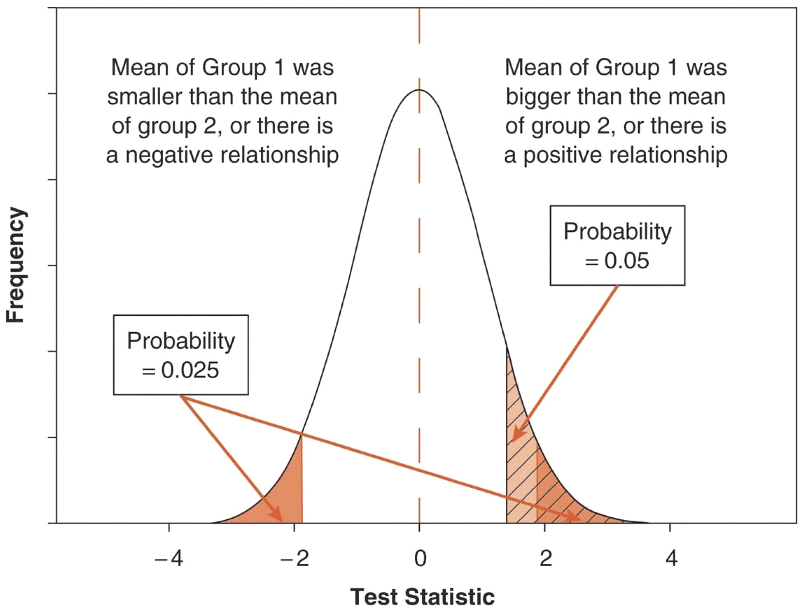
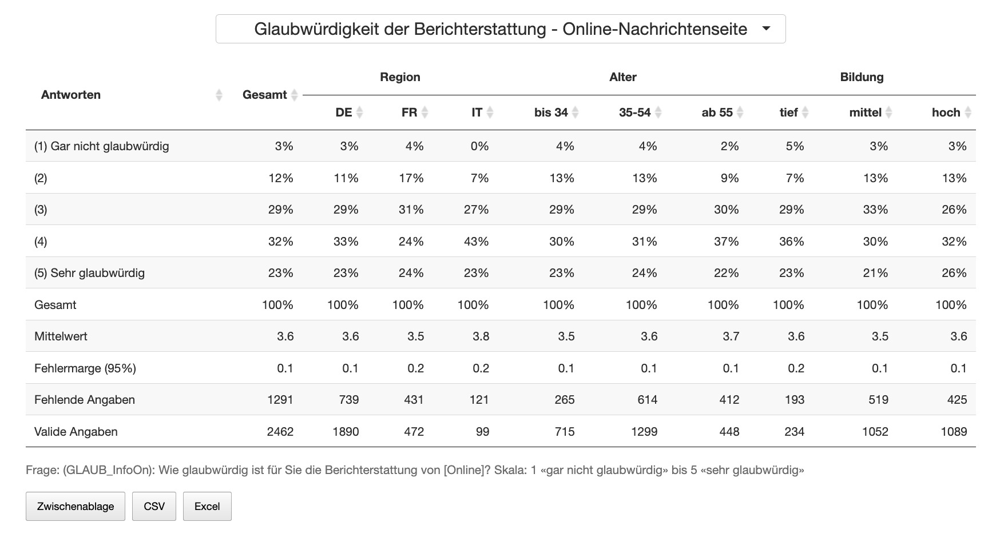
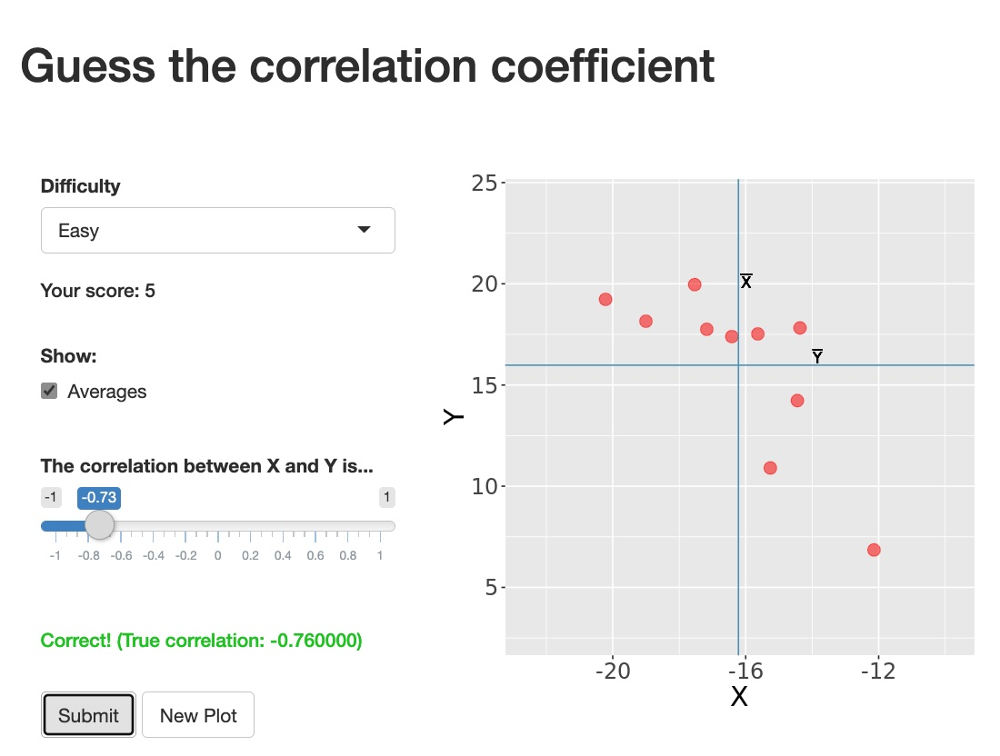
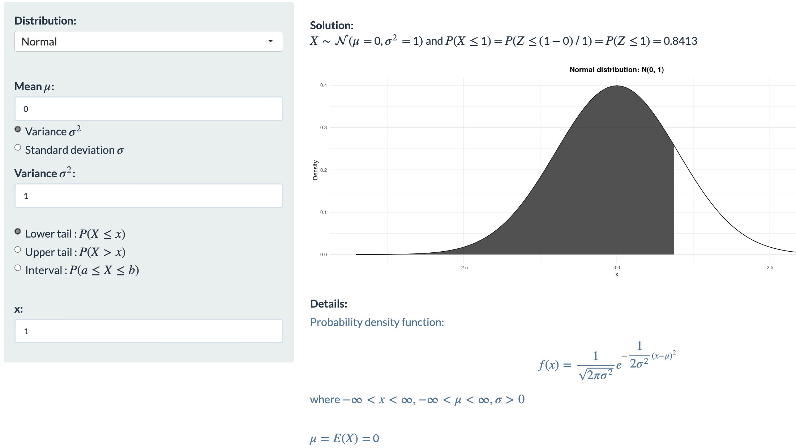
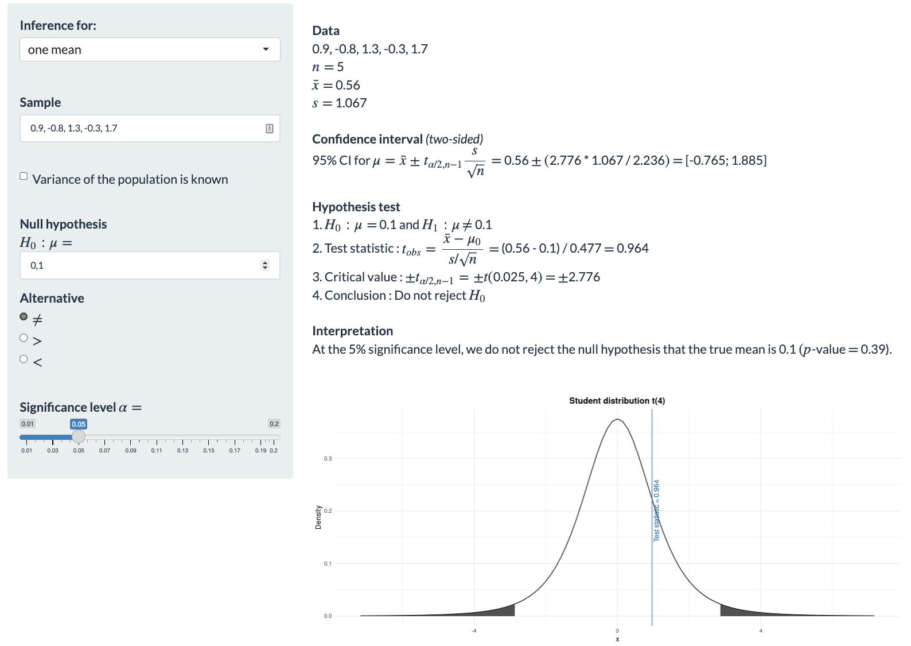

1 Was bisher geschah
1.1 Die Folien zur Sitzung
1.2 Univariate Statistik
Alle Statistik baut auf Masse zentraler Tendenz und Streumasse auf. Für das, was wir in diesem Semester tun, brauchen wir eigentlich nur den Mittelwert und die Varianz (bzw. die Standardabweichung). Der Mittelwert entspricht der Frage: Wie siehts denn normalerweise aus? Die Standardabweichung beantwortet die Frage: Gibt der «Normalwert» (Mittelwert) eine brauchbare Auskunft über die untersuchten Personen oder sind die doch alle sehr unterschiedlich. Mit dem Mittelwert und der Abweichung vom Mittelwert können wir Verteilungen beschreiben, die sich nach bekannten Gesetzen verteilen: den Wahrscheinlichkeitsgesetzen. Die Normalverteilung ist dabei die wichtigste Verteilung. Bei dieser gedachten Idealverteilung steht der Mittelwert genau in der Mitte und die Streuung ist ordentlich symmetrisch um den Mittelwerqt herum verteilt. Wegen dieser Eigenschaften, geben hier also der Mittelwert und die Standardabweichung die volle Information über die Art der Verteilung ab \(N(\overline{x},s_x)\). Die Standardnormalverteilung (nach der z-Transformation) hat einen Mittelwert von 0 und eine Standardabweichung von 1.
\[\begin{align} \overline{x} = & \frac{1}{n}\sum_i^n(x_i) \label{eq:Mittelwert-x}\\ \overline{y} = & \frac{1}{n}\sum_i^n(y_i) \label{eq:Mittelwert-y}\\ s^2 = V = & \frac{1}{n} \sum_i^n(x_i-\overline{x})^2 \label{eq:Varianz-x}\\ s = & \sqrt{\frac{1}{n} \sum_i^n(x_i-\overline{x})^2} \label{eq:SD-x}\\ z_i= &\frac{x_i-\overline{x}}{s} \label{eq:z-Transformation} \end{align}\]
Eine z-verteilte Grösse hat immer: \(\overline{x}=0\) und \(s = 1\). - Nach der z-Transformation gibt es immer eine Entsprechung zwischen den ursprünglichen Ausprägungen und denen der z-Verteilung. - Werte einer standardisierten Verteilungen sind vergleichbar.
1.3 Bivariate Statistik
1.3.1 Kreuztabellen
Wenn wir Daten analysieren, dann können wir sie visualisieren. Eine sehr starke Form der Visualisierung sind Tabellen. Der Vorteil von Tabellen ist, dass sie sehr dicht an den Daten sind, wir also z.B. sehen können dass, 57 Prozent der Haushalte noch über mindestens ein Radiogerät verfügen. In der Deutschschweiz (DS) sind es sogar 62 Prozent, während es in der Romandie (FS) 44 Prozent sind und im Tessin und den weiteren Teilen der italienischen Schweiz (IS) 63 Prozent. Man kann aus Kreuztabellen für die beiden berücksichtigten Variablen den ursprünglichen Datensatz rekonstruieren, weil man weiss wie viele Leute befragt wurden, wie viel Prozent aus der DS sind, aus der FS und aus der IS und wie viele Leute jeweils mindestens ein Radio haben. Irgendwann kann ich Ihnen mal zeigen, wie man aus einer Kreuztabelle eine Korrelation berechnen kann – man braucht nicht mehr. Also gut, die Tabellen enthalten viele Informationen und können, mit ein bisschen Anleitung, von fast jedem gelesen werden (anders als unserer schönen Regressions- oder Strukturgleichungsmodelle). Das Problem ist aber, dass man sehr schnell einschläft, wenn einem so eine Tabelle vorgelesen wird. Wenn man sie selbst liesst, ist es einfach sehr viel, worauf man schauen muss, was man vergleichen und dann vielleicht sogar noch texten muss. Eine Korrelation fast in einem direkt lesbaren Wert das Zusammen, was Sie vielleicht aus 5*5, also 25 Tabellenzellen mühsam herauslesen und dann immer noch nur so vom Gefühl her texten können. Tabellen sind also relativ voraussetzungsfrei interpretierbar, aber es ist sehr ermüdend und langwierig.
Beispiel für eine Kreuztabelle mit Link zu mehr (interaktiven) Kreuztballen:

1.3.2 Covarianz und Korrelation
Vor ein paar Zeilen hatte ich behauptet, man brauche als Kenngrössen in der Statistik nicht mehr als Mittelwert und Standardabweichung. Das sollte der Beruhigung dienen und ist ein bisschen gelogen. Ein Merkmal kann man mit diesen Kenngrössen in der Regel gut beschreiben, aber um das Zusammenspiel zweier Variablen beschreiben zu können, braucht es noch eine Kenngrösse: die Kovariation. Wieder etwas vereinfacht und doch nicht ganz falsch: fast alle multivariate Statistik baut auf Mittelwerten, Varianzen und Kovarianzen auf.
Kovarianz (cov oder auch C) sieht genauso aus, wie die Definition der Varianz, nur, dass nicht die Mittelwertabweichungen einer Variablen quadriert werden, sondern die Mittelwertabweichungen zweier Variablen multipliziert werden. Berechnet man die Kovarianz einer Variable mit sich selbst, kommt wieder die Varianz raus. Da Varianz und Mittelwert nicht standardisiert sind, ist auch die Kovarianz nicht standardisiert. Rechnet man mit standardisierten Variablen, kommt auch ein standardisierter Wert für die Kovarianz raus. Da der für Vergleiche von unvergleichlicher Bedeutung ist, hat auch dieser Kennwert einen eigenen Namen bekommen: Korrelation (r).
\[\begin{align} cov = C = & \frac{1}{n}\sum_i^n(x_i-\overline{x}) (y_i-\overline{y}) \label{eq:Covarianz} \\ r = & \frac{\sum_i^n(x_i-\overline{x}) (y_i-\overline{y})}{n \cdot s_x \cdot s_y} \label{eq:Korrelation} \end{align}\]Diese kleine shiny-App lässt Sie spielerisch raten, wie gross wohl eine Korrelation ist, wenn Sie eine Punktwolke sehen. Sie werden feststellen, dass die Statistik feiner gucken kann als der Mensch. Wo Sie kaum eine Korrelation feststellen können, misst die Statistik durchaus noch Zusammenhänge:

1.3.3 Bivariate Regression
Die bivariate Regression ist im Grunde eine gehaltvollere Korrelation. Bei der Regression bestimme ich, im Unterschied zur Korrelation, was die abhängige Variable sein soll (AV) und was die unabhängige Variable sein soll (UV). Was die Regression bringt, sieht man in folgenden Formeln. Wenn wir in der ersten Zeile der Formeln @ref(eq:Mittelwert-Modell) davon ausgehen, dass wir keine UV haben, die die AV erklärt, dann haben wir als beste Information nur den Mittelwert. In dem Fall wäre unser Minimodell also: Die Werte in der Variable \(Y_i\) sind am besten durch ihren Mittelwert \(\overline{Y}\) «erklärt». Übrig bleiben die Abstände zwischen den gefundenen Werten und diesem Minimodell, also dem Mittelwert von Y. In der zweiten Zeile @ref(eq:Regressions-gleichung) sind wir schon klüger und nehmen an, dass eine Variable X dafür verantwortlich ist, dass die \(Y_i\) so ausfallen, wie sie ausfallen. In der zweiten Zeile heisst es im Grunde: Die Werte in der AV Y sind abhängig von der UV X, wobei jeder Wert X mit einem b multipliziert werden muss und dann ein Rest \(e_i\) bleibt. Damit Y nicht 0 sein muss, wenn X 0 ist (b*0=0), kommt zu dem \(b_2\) noch ein \(b_1\). Fertig ist die bivariate Regressionsgleichung.
\[\begin{align} Y_i & = \overline{Y} + e_i \label{eq:Mittelwert-Modell} \\ Y_i & = b_1 + b_2X_i + e_i \label{eq:Regressions-gleichung} \\ \hat{Y_i} & = b_1 + b_2X_i \label{eq:Regressions-Modell} \\ Y_i & = \hat{Y_i}+e_i \label{eq:Varianz-Modell-Residuum} \end{align}\]Jetzt könnten wir noch die vorhergesagten \(\hat{Y}\) (gekennzeichnet durch ein Dach) durch das Modell abbilden, wobei dann einfach kein \(e_i\) bleibt (dritte Zeile @ref(eq:Regressions-Modell)). In der untersten Formel @ref(eq:Varianz-Modell-Residuum) haben wir die in der Stichprobe gemessenen \(Y_i\), die gleich gesetzt sind mit den geschätzten \(Y_i\) und dem Rest \(e_i\).
Das \(b_2\) gibt jetzt an, um wie viel Y grösser (oder kleiner) ist, wenn X um eine Einheit seiner Skala grösser wird. Die b’s sind also skalenabhängig. Weil das nicht immer leicht zu interpretieren ist und uns oft die Skalierung nicht weiter interessiert, wurden die standardisierten Regressionkoeffizienten erfunden. Bei diesen steht im Grunde wieder eine z-Transformation im Hintergrund, die die Skala «herausrechnet», indem durch die Standardabweichung geteilt wird.
Die standardisierten Regressionskoffizienten geben einen Zusammenhang in Standardabweichungen an: Wenn x um eine Standardabweichung grösser ist, um wie viele Standardabweichungen ist dann y grösser (kann negativ sein)?
Sie sind definiert als: \(BETA = b\cdot\frac{s_x}{s_y}\)
Die BETAs1 sind den partiellen Korrelationen sehr ähnlich: +1 ist ein perfekter positiver Zusammenhang, 0 kein Zusammenhang und -1 ein perfekter negativer Zusammenhang. Interpretieren würde ich ab 0.1, wenn sie signifikant sind.
1.4 Inferenzstatistik
Was in den Daten ist, die wir analysieren, das ist in den Daten – Punkt. Wir können Daten mit all diesen Tools untersuchen. Dafür brauchen wir natürlich vollständige Daten über das, was wir untersuchen wollen. Die haben wir aber oft nicht, weil es schlicht zu teuer ist und alle Menschen unfassbar nerven würde, wenn alle Sozialforscher:innen und Psycholog:innen und Wirtschaftswissenschaftler:innen usw. dauernd alle Menschen befragen würden. Das machen wir nicht, weil eine faszinierende Eigenschaft der Statistik ist, dass wir aus Teildaten Schlüsse auf die «Gesamt-Daten» ziehen können. Dieses Schliessen nennt man Inferenz (besser über das Englische zu merken: to infer). Dafür ist es notwendig, dass wir die Daten ohne bewussten Bias aus den Gesamtdaten entnommen haben.
Einen Bias ausschliessen können wir, wenn wir den Zufall walten lassen. Zufall ist nichts anderes als das Nicht-bewusst-oder-unbewusst-Auswählen. Wenn wir zufällig gezogen haben, dann haben wir eine gute Chance auf ein unverzerrtes Abbild der Grundgesamtheit, die uns interessiert. Dann berechnen wir die ganzen Kennwerte der deskriptiven Statistik für die Stichprobe und können anhand der Zufallsgesetze bzw. Wahrscheinlichkeitstheorie auf die Verteilung in der Grundgesamtheit schliessen. Dabei bleibt eine Unsicherheit, weil der Zufall zufällig ungünstig ausfallen kann (wir haben auch schon Pferde kotzen sehen).
Wir können allerdings sagen, wie wahrscheinlich bzw. unwahrscheinlich es ist, dass wir extrem viel Pech hatten mit unserer Stichprobenziehung. Dabei sind wir sehr vorsichtig und schätzen und testen konservativ. Die Frage ist also immer: Kann ich, wenn ich ganz vorsichtig und konservativ bin, ausschliessen, dass ich sehr viel Pech bei der Ziehung meiner Zufallsstichprobe hatte? Das Pech bei der Zufallsziehung wird als Nullhpyothese bezeichnet (H0). Die sagt nämlich, wir haben eigentlich keinen Unterschied oder Zusammenhang und trotzdem in unserer Stichprobe den Unterschied (abweichend von 0) gefunden, den wir gefunden haben. Wenn wir – bei aller Vorsicht – sagen, dass ein Effekt (Unterschied oder Zusammenhang) so gross ist, dass die Nullhypothese so unwahrscheinlich wird (5% Irrtumswahrscheinlichkeit), dass wir sie ablehnen können, dann haben wir etwas gefunden, etwas Signifikantes!
Ob das signifikante Ergebnis unserer Theorie entspricht oder nicht, das müssen wir dann noch schauen, aber erstmal können wir festhalten, dass wir überhaupt etwas gefunden haben und nicht sagen müssen: Wir haben zwar einen positiven Zusammenhang gefunden, aber statistisch müssen wir die Nullhypothese beibehalten, dass der Zusammenhang positiv sein könnte, aber auch 0 oder negativ. Wenn wir nichts ausschliessen können, wissen wir nichts. Die H0 bedeutet also, dass wir statistisch nichts feststellen können und daher auch nicht zu Wissen gelangen. Wenn Sie irgendwo lesen, dass jemandem in seinen Analysen eine H0 zugute kommt oder die Annahme einer Nullhypothese als Erkenntnis gefeiert wird, seien Sie sehr skeptisch! Meistens liegt ein Denkfehler zugrunde: Dass ich 0 nicht ausschliessen kann, heisst nicht, dass ein Zusammenhang oder Unterschied nicht existiert. Wenn wir z.B. in einer Stichprobe einen Unterschied zwischen zwei Gruppen gefunden haben, dann ist die Wahrscheinlichkeit dafür, dass der Unterschied in der Grundgesamtheit 0 ist genauso gross, wie die Wahrscheinlichkeit, dass der Unterschied in der Grundgesamtheit doppelt so gross ist, wie der den wir gefunden haben. Das liegt daran, dass die Glockenkurve der Fehlerverteilung um einen gefundenen Wert symmetrisch um den gefunden Unterschied verteilt ist.
Mit dieser App lässt sich etwas mit der Normalverteilung experimentieren:

1.4.1 Konfidenzintervalle für Mittelwerte
Konfidenzintervalle geben einen Wertebereich an, in dem die Parameter (GG) der Stichprobenkennwerte mit einer angebbaren Wahrscheinlichkeit liegen.
\[\begin{align} \text{ KI:}& \overline{X}\pm z_1 \cdot SE \label{eq:Konfidenz-Intervall-1}\\ \text{KI:}& \overline{X}\pm z_1 \cdot \frac{s_x}{\sqrt{n}} \label{eq:Konfidenz-Intervall-2}\\ \text{KI}_{l.05} =& \overline{x} - 1.96 \cdot \frac{s_x}{\sqrt{n}} \label{eq:Konfidenz-Intervall-3}\\ \text{KI}_{r.05} =& \overline{x} + 1.96 \cdot \frac{s_x}{\sqrt{n}}\label{eq:Konfidenz-Intervall-4} \end{align}\]Mit dieser kleinen Onlineapp können Sie sich mal einen Eindruck davon verschaffen, wie Konfidenzintervalle reagieren. Schalten Sie sich mal «Show Confidence Intervals» und «Show True Parameter» an und stellen die «Number of Experiments» auf 20. Dann suchen Sie mal, wie viele Konfidenzintervalle den wahren Wert nicht enthalten:
1.4.2 Hypothesentesten
Erkenntnistheoretisch prüfen wir unsere Hypothesen, um unser Wissen immer weiter abzusichern, bzw. Veränderungen festzustellen. Eine Theorie muss sich in der empirischen Sozialforschung immer wieder an neuen Daten bewähren. Wiedersprechen meine Daten immer wieder (replizierbar) der Theorie, wird sie modifiziert oder aufgegeben, wenn wir was Besseres haben.
Bei der statistischen Analyse gibt es neben unseren wissenschaftlichen Hypothesen auch rein statistische Fragen. Wenn wir einen Mittelwert in unserer Stichprobe finden, ist der sicher nicht identisch mit dem entsprechenden Parameter \(\mu\) in der Grundgesamtheit (Population). Es stellt sich also immer die Frage nach möglichen Unschärfen. Über die statistischen Hypthesen können wir Aussagen treffen, wenn wir den Gesetzen der Wahrscheinlichkeit (Stochastik) eine Chance geben, also wenn wir Zufallsstichproben ziehen. Diese Zufallsstichproben ziehen wir aber nicht aus der Grundgesamtheit, also allen Objekten oder Subjekten, für die unsere Theorie Gültigkeit beansprucht. Wir ziehen Stichproben in einem abgesteckten Zeitrahmen und unter den Bedingungen der Machbarkeit. Wer kein Telefon hat, wird nicht angerufen. Um dieser Unterscheidung nachdruck zu verleihen, unterscheide ich Grundgesamtheit und Auswahlgesamtheit. Für letztere gilt: Jedes Element der Auswahlgesamtheit hat eine von 0 verschiedene Chance in die Stichprobe zu gelangen.
- Könnte in der Auswahlgesamtheit der wahre Wert auch 0 sein, oder ein anderes Vorzeichen haben?
- Die Nullhypothese ist eine statistische Hypothese gegen Falschentscheidungen aufgrund von Zufallsziehungen.
- Nullhypothesen werden anhand von bekannten Verteilungen getestet.
Link zu einer guten App zum Probieren:

Es ist recht ungünstig, dass die standardisierten Regressionskoeffizienten (fast) genauso heissen wie die Parameter \(\beta\) der b’s. Ich versuche das verbal deutlich zu machen, indem ich «beeta» mit langem ee sage, wenn ich die standardisierten Regressionkoeffizienten BETA meine und «betta» sage (mit sehr kurzem e), wenn ich die griechischen \(\beta\) meine. Wenn Sie irgendwo ausserhalb eines Statistiklehrbuchs BETA lesen oder (sogar immer häufiger) \(\beta\), dann verlassen Sie sich darauf, dass immer die standardisierten Regressionskoeffizienten gemeint sind und nie die Parameter der Regressionskoeffizienten in der Grundgesamtheit, weil wir die nie kennen werden und deshalb in empirisch wissenschaftlichen Publikationen so gut wie nie die Rede von unbekannten Parametern sein wird, sondern immer von den Kennwerten der Stichprobe, also den standardisierten Regressionskoeffizienten BETA. Didaktisch ist das blöd, aber es ist so und wenn ich jetzt was ganz Neues erfinde, dann bringt Ihnen das auch garnix.)↩︎